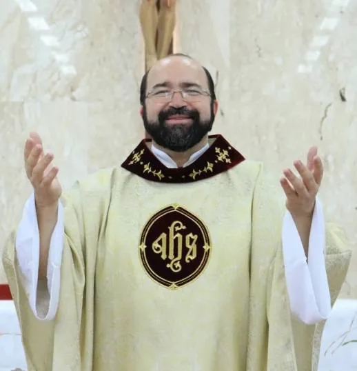
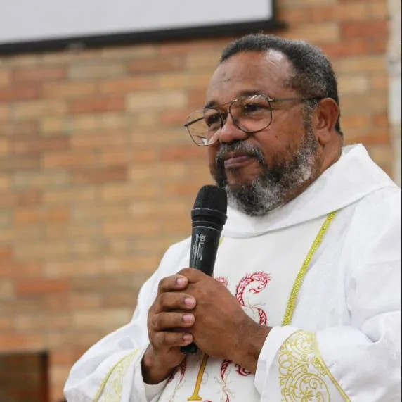
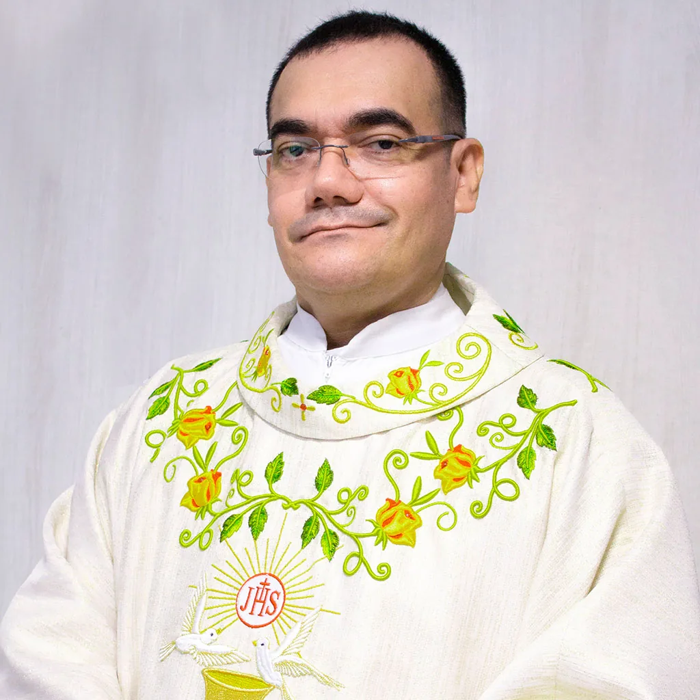

Os sacerdotes e diáconos que servem e serviram a nossa paróquia.

Padre Paulo Sergio Casteliano Silva, também conhecido como padre Paulinho, nasceu no Rio de Janeiro e veio para Brasília com 4 anos de idade.
Aos 17 anos sentiu o chamado ao sacerdócio e durante um ano fez o discernimento vocacional, decidindo então entrar para o seminário.
Padre Paulinho é um sacerdote ativo na arquidiocese de Brasília, já foi reitor no seminário menor, vigário episcopal para as obras sociais e vigário episcopal do vicariato centro.
Atualmente é coordenador arquidiocesano dos MESCE (Ministros Extraordinários da Sagrada Comunhão Eucarística), diretor espiritual do seminário maior, coordenador das festas de Nossa Senhora Aparecida, Corpus Christi da arquidiocese e pároco da paróquia São José.

Albérico José de Araujo Santos, conhecido como diácono Albérico, nasceu em Recife, Pernambuco.
Foi ministro da eucaristia na paróquia São Paulo Apóstolo e sentiu o chamado para ser diácono através da palavra de Deus.
Foi convidado para o diaconato através de um projeto do padre Carlos, o qual aceitou a oportunidade, que deveria ter 4 diáconos e ele foi um dos escolhidos. Entrou na escola diaconal e após 4 anos de estudos foi ordenado.
Foi diácono na paróquia São Paulo Apóstolo e por uma necessidade foi solicitado para servir na paróquia São José.
Participou durante 3 anos no programa “Páginas difíceis da Bíblia” na Rede Vida, auxiliando o padre Fernando Cardoso.
Desde 2016 iniciou o projeto de Estudos e Formação São José, que está ativo até hoje junto com os membros da paróquia.

Padre Olmer Guerrero Garcia nasceu no dia 31 de agosto de 1969, na cidade de Génova, no Estado de Quindio, na Colômbia.
Na adolescência, estudava, participava dos trabalhos pastorais na Paróquia do Sagrado Coração de Jesus em Armênia e sentia-se chamado à vida consagrada; gostava de ler livros dos santos.
Ao terminar o ensino médio, ingressou na universidade Federal “Del Quindio”, onde cursou Administração Financeira e Bancária. Estando no segundo semestre da universidade, foi selecionado para trabalhar num banco, onde exerceu vários cargos até chegar a assistente do gerente geral. Já no final do curso universitário, voltou a sentir o chamado de Jesus.
Em 1992, iniciou seus estudos de Filosofia na Armênia. Ao terminar o curso de filosofia recebeu a proposta de estudar Teologia em Brasília, pela Arquidiocese, convite esse aceito, vindo iniciar seus estudos Teológicos em janeiro de 1995.
Foi ordenado Diácono na Paróquia Nossa Senhora de Nazaré, de Samambaia, por imposição de mãos do Excelentíssimo Sr. Bispo auxiliar de Brasília Dom Jesus Rocha, no dia 07 de dezembro de 1997. Exerceu seu ministério diaconal na paróquia São Sebastião em Planaltina.
Foi ordenado Presbítero, pela imposição de mãos do Cardeal-Arcebispo Dom José Freire Falcão, aos 05 de dezembro de 1998, na Catedral Metropolitana de Brasília, e no mesmo dia foi nomeado como Vigário Paroquial da mesma paróquia onde exerceu seu ministério diaconal.
Trabalhou dois anos nessa comunidade e no dia 20 de outubro do ano 2000 foi nomeado pároco da paróquia São José, onde exerceu seu ministério até 2021, quando foi transferido para a paróquia Nossa Senhora do Lago.